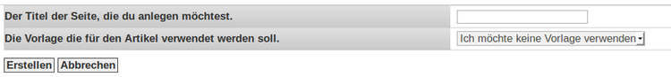
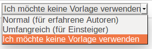

Wikiartikel anlegen
Ein neuer Artikel für das Wiki von Ubuntuusers.de soll entstehen?
Gerne  Diese Seite gibt eine kurze Einführung dazu. Sie erklärt, welche Arbeiten man als erstes, vor der eigentlichen Artikelerstellung, durchführen sollte. Am Ende bietet sie die Möglichkeit, einen Artikel mit Hilfe verschiedener Vorlagen (vorbereitete Codebausteine) anzulegen.
Diese Seite gibt eine kurze Einführung dazu. Sie erklärt, welche Arbeiten man als erstes, vor der eigentlichen Artikelerstellung, durchführen sollte. Am Ende bietet sie die Möglichkeit, einen Artikel mit Hilfe verschiedener Vorlagen (vorbereitete Codebausteine) anzulegen.
Erste Schritte¶
Nach dem Anlegen des Artikels erscheint der Inyoka-Editor mit einer Bearbeiten-Leiste und dem darunter liegenden Editor. Zeilen, die mit der Doppelraute (##) beginnen, sind Kommentare und werden im Artikel nicht angezeigt.
Man trägt zuerst das geplante Fertigstellungsdatum und sich selbst als Bearbeiter in der Vorlage Baustelle ein:
[[Vorlage(Baustelle, Datum, Bearbeiter)]]
Als nächstes sollten im Code alle Tags (Schlagworte) aus der Tagliste entfernt werden, die nicht zu dem Thema des Artikels passen. Die Tagliste ist immer die letzte Zeile eines Artikels:
Beispiel:
#tag: Multimedia, Audioplayer
Nun kann mit dem eigentlichen Artikel begonnen werden. Ein Beispiel, wie ein Artikel aufgebaut sein sollte, kann man der Seite Wiki/Referenz entnehmen.
Hinweis:
Im Artikel bitte auf die Einhaltung der Textformatierung achten.
Bei weiteren Fragen¶
Wiki
 - Übersicht aller Artikel die mit dem Wiki etwas zu tun haben
- Übersicht aller Artikel die mit dem Wiki etwas zu tun haben Wiki/Benutzung - Beschreibung der Reiterleiste oberhalb eines Artikels
Wiki/Syntax - Allgemeine Syntax mit Beispielen
Wiki/Bilder - Wie man Bilder in einem Artikel verwendet
Wiki/Textbausteine - Textbausteine, wie z.B. Hinweisboxen oder die PPA-Vorlage, die die Syntax vereinfachen
Wiki/Kopiervorlage - Die wichtigsten Textbausteine in einer Kopiervorlage
Wiki/Tag - Schlag- oder Stichwort, welches am Seitenende einer jeden Wikiseite zu finden ist
Sollten darüber hinaus noch Fragen offen sein, eröffnet man einfach eine neue Artikeldiskussion über den Reiter Diskussion und stellt dort seine Frage(n). Das Wiki-Team steht dann Rede und Antwort.
Das gleiche gilt, wenn ein Artikel fertig ist. Um das Verschieben aus der Baustelle ins Wiki kümmert sich dann ebenfalls das Wiki-Team.
Artikel anlegen¶
Zum Anlegen eines neuen Artikels ruft man im Browser die URL https://wiki.ubuntuusers.de/wiki/create auf. Jetzt sieht man auf der Seite ein Eingabefeld und ein Auswahlfeld.

Im Textfeld gibt man den gewünschten Namen des Artikels ein. Möchte man einen Unterartikel anlegen (z.B. "Unity/erweiterte Konfiguration"), so gibt man den Namen entsprechend ein, also mit dem Schrägstrich.
Hinweis:
Ein Voranstellen des Worts "Baustelle" im Titel ist zwingend notwendig, weil Inyoka dies im Moment nicht automatisch macht! Andernfalls können mit normalen Benutzerrechten im Wiki keine neuen Artikel angelegt werden. Ein Titel müsste also wie folgt angegeben werden: "Baustelle/Name des neuen Artikels"

Im unteren Auswahlfeld kann man die Textvorlagen auswählen, welche automatisch in den Artikel eingefügt werden sollen. Zur Auswahl stehen:
"Ich möchte keine Vorlage verwenden"- keine Vorlage
"Normal (für erfahrene Autoren)" - es werden einige grundlegende Textbausteine und Kommentare eingefügt
"Umfangreich (für Einsteiger)" - es werden viele Textbausteine und Kommentare eingefügt
Mit einem Klick auf "Erstellen" wird der neue Artikel dann automatisch in der Baustelle angelegt.
Sollte man sich beim Anlegen des Artikels im Namen vertippt haben oder im Nachhinein einen andere Namen wollen - einfach im zum Artikel gehörigen Diskussionsthread melden, das Wikiteam ändert dann den Namen.
Links¶
Wikipedia im Vergleich zum Ubuntuusers Wiki
 - beleuchtet die unterschiedlichen Arbeitsweisen, Blogbeitrag 10/2009
- beleuchtet die unterschiedlichen Arbeitsweisen, Blogbeitrag 10/2009
- Erstellt mit Inyoka
-
 2004 – 2017 ubuntuusers.de • Einige Rechte vorbehalten
2004 – 2017 ubuntuusers.de • Einige Rechte vorbehalten
Lizenz • Kontakt • Datenschutz • Impressum • Serverstatus -
Serverhousing gespendet von